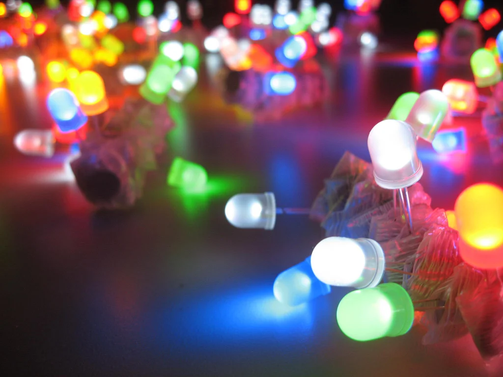

LED Flashing Circuit
Learn how to make an LED blink using a simple circuit with a resistor and a 555 timer.
LED Cube

Build a 8x8 matrix LED Cube
Homemade Speaker

Create this DIY custom speaker that requires very few materials!
Infrared Remote Control

Control devices using an infrared remote and receiver.